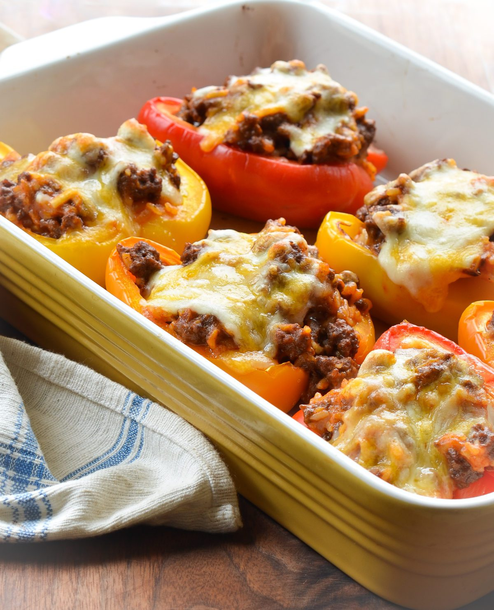

Stuffed Peppers

Description
Stuffed peppers with ground beef and rice are topped with a seasoned tomato sauce.
Ingredients
- Ingredient 1: 1 cup cold water
- Ingredient 2: ½ cup uncooked long grain white rice
Ingredient 3: 1 tablespoon vegetable oil
Ingredient 4: 1 pound ground beef
Ingredient 5: 6 medium green bell peppers
Ingredient 6: 16 ounces tomato sauce, divided
Ingredient 7: 1 tablespoon Worcestershire sauce
Ingredient 8: ¼ teaspoon garlic powder
Ingredient 9: ¼ teaspoon onion powder
Ingredient 10: salt and ground black pepper to taste
Ingredient 11: 1 teaspoon Italian seasoning
Steps
- Step 1: Gather all ingredients, and preheat the oven to 350 degrees F (175 degrees C).
- Step 2: Bring water and rice to a boil in a covered saucepan. Reduce heat to low and simmer
until rice is tender, about 20 minutes.
- Step 3: Meanwhile, heat oil in a skillet over medium heat. Add ground beef and cook until
evenly browned and crumbly, 7 to 9 minutes.
- Step 4:Hollow out bell peppers by removing and discarding the tops, seeds, and membranes.
Slice the bottoms of the peppers if necessary to make sure they stand up straight.
- Step 5: Arrange peppers in a baking dish with the hollowed sides facing upward.
- Step 6: Prepare filling by mixing cooked beef, cooked rice, 1/2 of the tomato sauce,
Worcestershire sauce, garlic powder, onion powder, salt, and pepper. Spoon an equal amount of filling
into each hollowed pepper.
- Step 7: Mix remaining tomato sauce and Italian seasoning in a bowl, and pour over the stuffed peppers.
- Step 8: Bake in the preheated oven, basting with sauce every 15 minutes, until peppers are tender, about 1 hour.
- Step 9: Serve hot and enjoy!